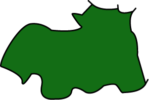

Hiroshima Prefecture is situated in the southwestern part of Japan's main island of Honshu and in the center of the Chugoku region with a total land area of 8,480km2 and a population of about 2.8 million people. It has the largest land area and population among prefectures in the Chugoku and Shikoku regions. The prefecture's geography is generally mountainous. The Chugoku Mountain Range is comprised of a series of mountains at least 1,000 meters in elevation in the northern part of the prefecture. In addition to the gently-sloping mountains and clear river gorges, scenic new green leaves in the spring and the beautiful colors of fall spread over a vast area. To the south, the prefecture borders the Seto Inland Sea, an area dotted with countless islands both large and small creating a panorama of island beauty. (Source)
Prefecture Image
Saijo Sake
An Evening of Kagura
The Outlets Hiroshima